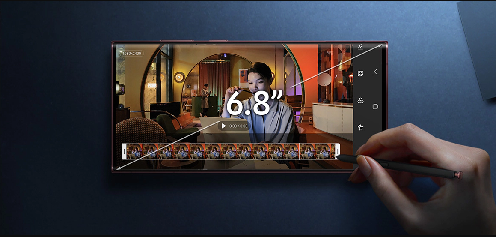

Galaxy S22 Ultra

Cкорость - его стихия. Первый 4 нм процессор.1
Встречайте мощный скачок в мобильных инновациях – наш самый быстрый и мощный процессор в истории Galaxy,
а значит, еще более быстрые графический и центральный процессоры по сравнению с Galaxy S21 Ultra.
Мощный аккумулятор, готовый работать день и ночь.3
Благодаря мощной батарее и поддержке супербыстрой зарядки 45 Вт4 ваш смартфон готов работать более суток
напролет.
Самые сочные цвета. С самым ярким дисплеем.
Дисплей Dynamic AMOLED 2x с технологией Vision Booster улучшает видимость экрана до 1750 нит2. Так что
теперь контент вашего смартфона виден даже в лучах яркого солнечного света.
Плавное видео в каждом кадре
Суперстабилизация устраняет дрожание камеры во время широкоугольной съемки и отслеживает сразу несколько
объектов в кадре. Это позволяет стабилизировать динамическое изображение и устранять размытие в каждой
сцене. А Super HDR дисплей 64x обеспечивает еще более яркую картинку с живой цветопередачей.
Самые сочные цвета. С самым ярким дисплеем.
Дисплей Dynamic AMOLED 2x с технологией Vision Booster улучшает видимость экрана до 1750 нит2. Так что
теперь контент вашего смартфона виден даже в лучах яркого солнечного света.
Каждый кадр – шедевр. Даже в темноте. Лучшая камера в Galaxy.
Наше самое яркое решение для ночной съемки. Датчик камеры захватывает еще больше света, технология Super
Clear Lens устраняет блики, а искусственный интеллект обеспечивает практически мгновенную обработку
кадра.
Самые сочные цвета. С самым ярким дисплеем.
Дисплей Dynamic AMOLED 2x с технологией Vision Booster улучшает видимость экрана до 1750 нит2. Так что
теперь контент вашего смартфона виден даже в лучах яркого солнечного света.
Встроенный S Pen для творчества и решения задач.
Еще более мощное электронное перо S Pen. Пишите им как обычной ручкой на экране смартфона, конвертируйте
рукописные заметки в печатный текст и используйте управление жестами для удаленного контроля функций.